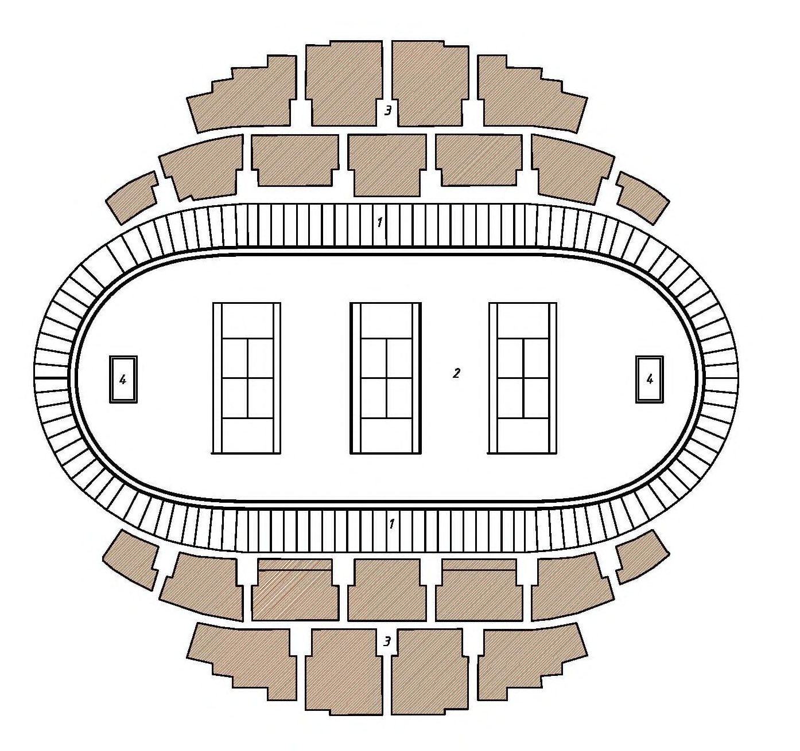
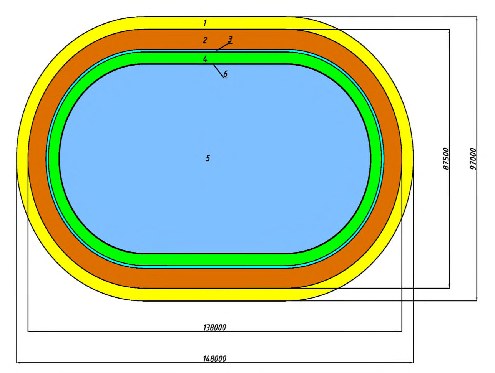
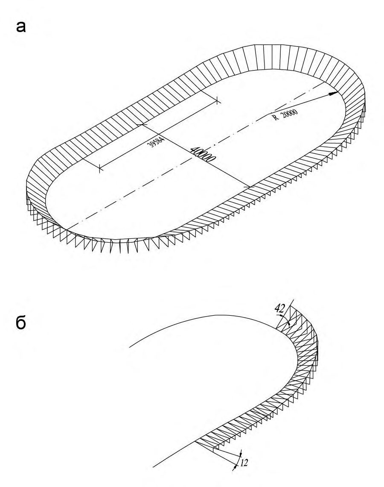
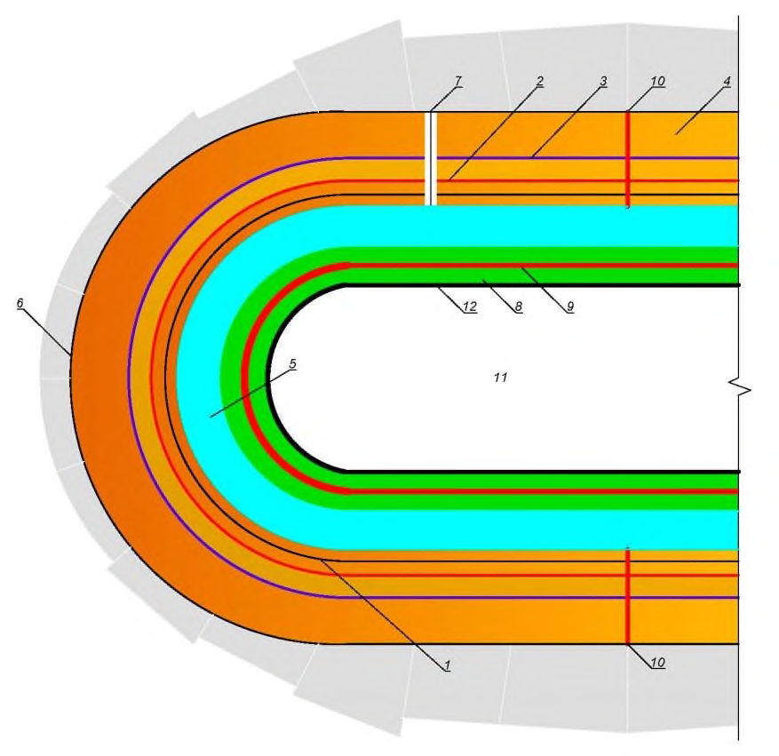
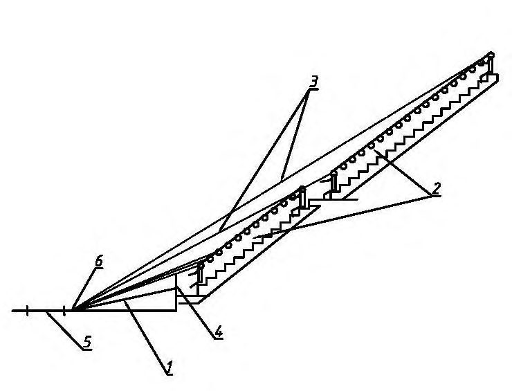

СП 457.1325800.2019 «Сооружения спортивные для велосипедного спорта. Правила про»
О документе: разработчики, утверждение, регистрация, ключевые слова
СВОД ПРАВИЛ
СП 457.1325800.2019
Издание официальное
1 ИСПОЛНИТЕЛИ - Акционерное общество «Центральный научноисследовательский и проектно-экспериментальный институт промышленных зданий и сооружений» (АО «ЦНИИПромзданий»), Общероссийская физкультурно-спортивная общественная организация «Российская ассоциация спортивных сооружений» (ОФСОО «РАСС»)
2 ВНЕСЕН Техническим комитетом по стандартизации ТК 465 «Строительство»
3 ПОДГОТОВЛЕН к утверждению Департаментом градостроительной деятельности и архитектуры Министерства строительства и жилищнокоммунального хозяйства Российской Федерации (Минстрой России)
4 УТВЕРЖДЕН приказом Министерства строительства и жилищнокоммунального хозяйства Российской Федерации от 2 декабря 2019 г. № 757/пр и введен в действие с 3 июня 2020 г.
5 ЗАРЕГИСТРИРОВАН Федеральным агентством по техническому регулированию и метрологии (Росстандарт)
В случае пересмотра (замены) или отмены настоящего свода правил соответствующее уведомление будет опубликовано в установленном порядке. Соответствующая информация, уведомление и тексты размещаются также в информационной системе общего пользования -на официальном сайте разработчика (Минстрой России) в сети Интернет
© Минстрой России, 2019
Настоящий нормативный документ не может быть полностью или частично воспроизведен, тиражирован и распространен в качестве официального издания на территории Российской Федерации без разрешения Минстроя России
Дата введения - 2020-06-03
УДК ОКС 91.040.10
Ключевые слова: спортивные сооружения, велотрек, полотно трека, функциональные зоны, вместимость, пропускная способность, объемнопланировочные решения, конструктивные решения, инженерные системы
ИСПОЛНИТЕЛЬ
| АО «ЦНИИПромзданий» Руководитель организации-разработчика Генеральный директор | Н.Г. Келасьев |
|---|---|
| Руководитель разработки Заместитель генерального | Д.К. Лейкина |
| СОИСПОЛНИТЕЛЬ ОФСОО «РАСС» Руководитель организации-разработчика | В.Б. Мяконьков |
| Генеральный директор Ответственный исполнитель | Ю.В. Шелякова |
Введение
6 ВВЕДЕН ВПЕРВЫЕ
Настоящий свод правил разработан в целях обеспечения соблюдения требований Федерального закона от 30 декабря 2009 г. № 384-ФЗ «Технический регламент о безопасности зданий и сооружений». Кроме того, применение настоящего свода правил обеспечивает соблюдение федеральных законов от 27 декабря 2002 г. № 184-ФЗ «О техническом регулировании», от 22 июля 2008 г. № 123-ФЗ «Технический регламент о требованиях пожарной безопасности», от 23 ноября 2009 г. № 261-ФЗ «Об энергосбережении, повышении энергетической эффективности и о внесении изменений в отдельные законодательные акты Российской Федерации», от 4 декабря 2009 г. № 329-ФЗ «О физической культуре и спорте в Российской Федерации», от 29 июня 2015 г. № 162-ФЗ «О стандартизации в Российской Федерации».
Свод правил разработан авторским коллективом АО «ЦНИИПромзданий» (д-р техн. наук В.В. Гранев , канд. архитектуры Д.К. Лейкина ), Общероссийской физкультурно-спортивной общественной организации «Российская ассоциация спортивных сооружений» (д-р психол. наук В.Б. Мяконьков , д-р экон. наук Л.В. Жестянников , Ю.В. Шелякова ).
1Область применения
Настоящий свод правил распространяется на проектирование зданий новых, реконструируемых и капитально ремонтируемых спортивных сооружений для велосипедного спорта (далее - велотрек) с замкнутой дорожкой (полотном) длиной 250 м для велосипедных гонок на треке.
2Нормативные ссылки
В настоящем своде правил использованы нормативные ссылки на следующие документы:
ГОСТ 27751-2014 Надежность строительных конструкций и оснований. Основные положения
ГОСТ 30494-2011 Здания жилые и общественные. Параметры микроклимата в помещениях
ГОСТ IEC 61140-2012 Защита от поражения электрическим током. Общие положения безопасности установок и оборудования
ГОСТ Р 22.1.12-2005 Безопасность в чрезвычайных ситуациях. Структурированная система мониторинга и управления инженерными системами зданий и сооружений. Общие требования
ГОСТ Р 50571.10-96 (МЭК 364-5-54-80) Электроустановки зданий. Часть 5. Выбор и монтаж электрооборудования. Глава 54. Заземляющие устройства и защитные проводники
ГОСТ Р 50571.22-2000 (МЭК 364-7-707-84) Электроустановки зданий. Часть 7. Требования к специальным электроустановкам. Раздел 707. Заземление оборудования обработки информации
ГОСТ Р 53195.1-2008 Безопасность функциональная связанных с безопасностью зданий и сооружений систем. Часть 1. Основные положения
ГОСТ Р 53195.2-2008 Безопасность функциональная связанных с безопасностью зданий и сооружений систем. Часть 2. Общие требования
Sports facilities for сycling. Rules of design
ГОСТ Р 53195.3-2014 Безопасность функциональная связанных с безопасностью зданий и сооружений систем. Часть 3 Требования к системам
ГОСТ Р 53195.4-2010 «Безопасность функциональная связанных с безопасностью зданий и сооружений систем. Часть 4. Требования к программному обеспечению
ГОСТ Р 53195.5-2010 Безопасность функциональная связанных с безопасностью зданий и сооружений систем. Часть 5. Меры по снижению риска, методы оценки
ГОСТ Р 53296-2009 Установка лифтов для пожарных в зданиях и сооружениях. Требования пожарной безопасности
ГОСТ Р 55529-2013 Объекты спорта. Требования безопасности при проведении спортивных и физкультурных мероприятий. Методы испытаний
СП 1.13130.2009 Системы противопожарной защиты. Эвакуационные пути и выходы (с изменением № 1)
СП 2.13130.2012 Системы противопожарной защиты. Обеспечение огнестойкости объектов защиты (с изменением № 1)
СП 3.13130.2009 Системы противопожарной защиты. Система оповещения и управления эвакуацией людей при пожаре. Требования пожарной безопасности
СП 4.13130.2013 Системы противопожарной защиты. Ограничение распространения пожара на объектах защиты. Требования к объемнопланировочным решениям (с изменением № 1)
СП 5.13130.2009 Системы противопожарной защиты. Установки пожарной сигнализации и пожаротушения автоматические. Нормы и правила проектирования (с изменением № 1)
СП 6.13130.2013 Системы противопожарной защиты. Электрооборудование. Требования пожарной безопасности
СП 7.13130.2013 Отопление, вентиляция и кондиционирование. Требования пожарной безопасности
СП 8.13130.2009 Системы противопожарной защиты. Источники наружного противопожарного водоснабжения. Требования пожарной безопасности (с изменением № 1)
СП 10.13130.2009 Системы противопожарной защиты. Внутренний противопожарный водопровод. Требования пожарной безопасности (с изменением № 1)
СП 16.13330.2017 «СНиП II-23-81* Стальные конструкции» (с изменением № 1)
СП 20.13330.2016 «СНиП 2.01.07-85* Нагрузки и воздействия» (с изменениями № 1, № 2)
СП 22.13330.2016 «СНиП 2.02.01-83* Основания зданий и сооружений» (с изменениями № 1, № 2)
СП 24.13330.2011 «СНиП 2.02.03-85 Свайные фундаменты» (с изменениями № 1, № 2, № 3)
СП 30.13330.2016 «СНиП 2.04.01-85* Внутренний водопровод и канализация зданий» (с изменением № 1)
СП 31.13330.2012 «СНиП 2.04.02-84* Водоснабжение. Наружные сети и сооружения» (с изменениями № 1, № 2, № 3, № 4)
СП 32.13330.2018 «СНиП 2.04.03-85 Канализация. Наружные сети и сооружения»
СП 42.13330.2016 «СНиП 2.07.01-89* Градостроительство. Планировка и застройка городских и сельских поселений» (с изменением № 1)
СП 44.13330.2011 «СНиП 2.09.04-87* Административные и бытовые здания» (с изменениями № 1, № 2)
СП 51.13330.2011 «СНиП 23-03-2003 Защита от шума» (с изменением № 1)
СП 52.13330.2016 «СНиП 23-05-95* Естественное и искусственное освещение»
СП 59.13330.2016 «СНиП 35-01-2001 Доступность зданий и сооружений для маломобильных групп населения»
СП 60.13330.2016 «СНиП 41-01-2003 Отопление, вентиляция и кондиционирование воздуха» (с изменением № 1)
СП 62.13330.2011 «СНиП 42-01-2002 Газораспределительные системы» (с изменениями № 1, № 2)
СП 63.13330.2018 «СНиП 52-01-2003 Бетонные и железобетонные конструкции. Основные положения»
СП 70.13330.2012 «СНиП 3.03.01-87 Несущие и ограждающие конструкции» (с изменениями № 1, № 3)
СП 76.13330.2016 «Электротехнические устройства»
СП 82.13330.2016 «СНиП III-10-75 Благоустройство территорий. Правила производства и приемки работ» (с изменением № 1)
СП 89.13330.2016 «СНиП II-35-76 Котельные установки»
СП 112.13330.2011 «СНиП 21-01-97* Пожарная безопасность зданий и сооружений»
СП 113.13330.2016 «СНиП 21-02-99* Стоянки автомобилей» (с изменением № 1)
СП 118.13330.2012 «СНиП 31-06-2009 Общественные здания и сооружения» (с изменениями № 1, № 2, №3)
СП 124.13330.2012 «СНиП 41-02-2003 Тепловые сети»
СП 129.13330.2011 «СНиП 3.05.04-85* Наружные сети и сооружения водоснабжения и канализации»
СП 132.13330.2011 Обеспечение антитеррористической защищенности зданий и сооружений. Общие требования проектирования
СП 134.13330.2012 Системы электросвязи зданий и сооружений. Основные положения проектирования (с изменением № 1)
СП 256.1325800.2016 Электроустановки жилых и общественных зданий. Правила проектирования и монтажа (с изменениями № 1, № 2, № 3)
СП 304.1325800.2017 Конструкции большепролетных зданий и сооружений. Правила эксплуатации
СП 332.1325800.2017 Спортивные сооружения. Правила проектирования
СанПиН 2.1.3.2630-10 Санитарно-эпидемиологические требования к организациям, осуществляющим медицинскую деятельность
СанПиН 2.1.4.1074-01 Питьевая вода. Гигиенические требования к качеству воды централизованных систем питьевого водоснабжения. Контроль качества. Гигиенические требования к обеспечению безопасности систем горячего водоснабжения
СанПиН 2.2.1/2.1.1.1076-01 Гигиенические требования к инсоляции и солнцезащите помещений жилых и общественных зданий и территорий
СанПиН 2.2.1/2.1.1.1200-03 Санитарно-защитные зоны и санитарная классификация предприятий, сооружений и иных объектов
СанПиН 2.2.1/2.1.1.1278-03 Гигиенические требования к естественному, искусственному и совмещенному освещению жилых и общественных зданий
Примечание - При пользовании настоящим сводом правил целесообразно проверить действие ссылочных документов в информационной системе общего пользования -на официальном сайте федерального органа исполнительной власти в сфере стандартизации в сети Интернет или по ежегодному информационному указателю «Национальные стандарты», который опубликован по состоянию на 1 января текущего года, и по выпускам ежемесячного информационного указателя «Национальные стандарты» за текущий год. Если заменен ссылочный документ, на который дана недатированная ссылка, то рекомендуется использовать действующую версию этого документа с учетом всех внесенных в данную версию изменений. Если заменен ссылочный документ, на который дана датированная ссылка, то рекомендуется использовать версию этого документа с указанным выше годом утверждения (принятия). Если после утверждения настоящего свода правил в ссылочный документ, на который дана датированная ссылка, внесено изменение, затрагивающее положение, на которое дана ссылка, то это положение рекомендуется применять без учета данного изменения. Если ссылочный документ отменен без замены, то положение, в котором дана ссылка на него, рекомендуется применять в части, не затрагивающей эту ссылку. Сведения о действии сводов правил целесообразно проверить в Федеральном информационном фонде стандартов.
3Термины, определения и сокращения
- 3.1.1 велотрек
- Специализированное спортивное сооружение крытого типа для проведения спортивных мероприятий по велосипедным гонкам на треке.
- 3.1.2 спортивная зона велотрека
- Пространство, включающее полотно трека и центральную часть.
- 3.1.3 полотно велотрека
- Основной структурно-конструктивный элемент велотрека -круговая дорожка со специальным покрытием и виражами -предназначенная для проведения гонок по различным дисциплинам велосипедного спорта на треке. 3.2 В настоящем своде правил применены следующие сокращения: БПС - билетно-пропускные системы; ИТП - индивидуальные тепловые пункты; МГН - маломобильные группы населения; ОФП - общая физическая подготовка; ПОДА - повреждение опорно-двигательного аппарата; СКУД - системы контроля и управления доступом; СФП - специальная физическая подготовка.
4Общие положения
Таблица 1 Категории велотреков
| Категория велотрека | Уровень спортивно-массовых мероприятий, проводимых на велотреке | Число мест для зрителей на трибунах |
|---|---|---|
| А | Международные и всероссийские физкультурные мероприятия и спортивные мероприятия | Более 1000 |
| В | Межрегиональные физкультурные мероприятия и спортивные мероприятия, а также физкультурные мероприятия и спортивные мероприятия субъекта Российской Федерации | 500-1000 |
| С | Иные физкультурные мероприятия и спортивные мероприятия | 250-500 |
5Требования к земельному участку
В непосредственной близости от внешнего периметра велотрека следует предусматривать стоянки автомобилей для посетителей с учетом требований СП 113.13330.
- к пожарным гидрантам;
- к местам вывода наружу патрубков сети внутреннего противопожарного водопровода и установок автоматического пожаротушения из расчета подключения к ним насосов не менее двух пожарных машин.
Вблизи мест расположения эвакуационных выходов следует предусматривать площадки для рассредоточения эвакуируемых из велотрека людей при пожаре.
6Требования к объемно-планировочным решениям
- спортивная зона (полотно трека, центральная зона для ожидания старта, размещения команд и судейской бригады);
- зона зрителей;
- тренировочная зона - залы ОФП и СФП, зона разминки за перилами полотна (внешняя дорожка);
- вспомогательная зона - зона помещений обслуживания соревнований (раздевальни, тренерские, судейские, пресс-служба, медпункт, допингконтроля и пр.);
- зона технических помещений (обслуживание и размещение инженерных систем, и пр.).
- длина полотна 250 м;
- радиус виражей - 22 м;
- ширина полотна - 9 м;
- ширина зоны для тихой езды - 4 м;
- углы наклона на вираже - 42°-46°, на прямой - 13° (приложение А).
Высоту административных и служебных помещений следует определять согласно СП 44.13330.
- тоннелем шириной не менее 4 м, с однородным покрытием, устойчивым к нагрузкам и механическим повреждениям - под полотном, обеспечивающий свободное и безопасное перемещение участников соревнований, тренеров и судей, а также специализированной техники для обслуживания спортивной зоны;
- по лестницам или пандусам.
- 6.12. С учетом профиля полотна и уклона виражей, трибуны следует размещать в зоне прямого участка.
- спринтерская гонка - от 2 до 4 гонщиков;
- командный спринт - 2 команды по 2-3 гонщика;
- командная гонка преследования - 2 команды по 4 гонщика;
- индивидуальная гонка преследования - 2 гонщика;
- кейрин - от 6 до 7 гонщиков.
- общей доступности здания для зрителей в соответствии с СП 59.13330;
- доступности функциональных зон для занимающихся спортом слепых и спортом ПОДА (в том числе адаптивными трековыми гонками на велосипедах).
7Обеспечение пожарной безопасности
- уклон лестниц трибун, не оборудованных поручнями высотой не менее 0,9 м (или устройствами их заменяющими), - не более 1 : 1,6;
- уклон лестниц трибун, оборудованных поручнями высотой не менее 0,9 м (или устройствами их заменяющими), - не более 1 : 1,4;
- наличие разделительных поручней на высоте не менее 0,9 м (для лестниц, проходов и люков с расчетной шириной более 4 м);
- ограждение высотой не менее 0,8 м, не мешающее видимости, установленное вдоль прохода каждого зрительного ряда при разнице отметок пола смежных рядов более 0,55 м;
- высота барьера перед первым рядом на балконах и ярусах - не менее 0,8 м;
- расчетное время эвакуации - в соответствии с расчетом времени эвакуации по СП 118.13330.2012 (пункт 6.22);
- ширина путей эвакуации для горизонтальных проходов, пандусов и лестниц на трибунах не менее 1 м.
8Требования к конструктивным решениям
9Требования к инженерным системам
- диспетчеризации;
- сигнализации;
- учета потребления энергоресурсов;
- обеспечения безопасности сооружения;
- охраны входов в здание;
- видеоконтроля.
Полотно велотрека следует обеспечивать инженерными системами связи и электроснабжения для подключения оборудования:
- системы хронометража, включая автоматический подсчет кругов;
- системы фиксирования результата и фотофиниша.
Комплектация и функциональные возможности систем БПС и СКУД определяются заданием на проектирование.
АПриложение А. Размеры и основные параметры велотрека

1 - полотно трека; 2 - центральная зона (размещение игровых площадок, пример); 3 - зона зрителей (трибуны); 4 - выход тоннеля в центральную зону
Рисунок А.1 - Функциональное зонирование велотрека (пример)

1 - зона разминки (внешняя дорожка); 2 - полотно трека; 3 - «лазурный берег»; 4 - зона тихой езды; 5 -центральная часть; 6 - ограждение
Рисунок А.2 - Параметры спортивной зоны велотрека с зоной разминки (внешней дорожкой)

а параметры полотна; б углы уклонов на вираже и на прямом участке полотна
Рисунок А.3 - Профиль полотна велотрека

1 - черная линия; 2 - «спринтерская линия»; 3 - «стайерская линия»; 4 - полотно трека; 5 - «лазурный берег»; 6 - внешний край полотна («борт»); 7 - финишная линия; 8 - «зеленая зона» (зона тихой езды); 9 -красная линия в зеленой зоне; 10 - линии гонки преследования; 11 - центр трека (свободное пространство); 12 - ограждение
Рисунок А.4 - Линии разметки на полотне велотрека (продольные и поперечные)

1 - полотно трека (прямой участок); 2 - зрители на местах; 3 - расчетные линии видимости с трибун; 4 -барьер ограждения; 5 - «зеленая зона» (зона тихой езды); 6 - расчетная точка (нижняя точка уклона полотна)
Рисунок А.5 - Места для зрителей и линия видимости
Библиография
- [1] Федеральный закон от 29 декабря 2004 г. №190-ФЗ «Градостроительный кодекс Российской Федерации»
- [2] Федеральный закон от 22 июля 2008 г. №123-ФЗ «Технический регламент о требованиях пожарной безопасности»
- [3] Федеральный закон от 30 декабря 2009 г. №384-ФЗ «Технический регламент о безопасности зданий и сооружений»
- [4] Федеральный закон от 23 июля 2013 г. №192-ФЗ «О внесении изменений в отдельные законодательные акты Российской Федерации в связи с обеспечением общественного порядка и общественной безопасности при проведении официальных спортивных соревнований»
- [5] Постановление Правительства Российской Федерации от 6 марта 2015 г. № 202 «Об утверждении требований к антитеррористической защищенности объектов спорта и формы паспорта безопасности объектов спорта»
- [6] Приказ Министерства спорта Российской Федерации от 25 февраля 2016 г. № 172 «Об утверждении классификатора объектов спорта»
- [7] СО 153-34.21.122-2003 Инструкция по устройству молниезащиты зданий
- [8] Приказ Министерства внутренних дел Российской Федерации № 1092 от 17 ноября 2015 г. «Об утверждении Требований к отдельным объектам инфраструктуры мест проведения официальных спортивных соревнований и техническому оснащению стадионов для обеспечения общественного порядка и общественной безопасности»
- [9] СП 2.1.2.3304-15 Санитарно-эпидемиологические требования к размещению, устройству и содержанию объектов спорта
- [10] СП 2.3.6.1079-01 Санитарно-эпидемиологические требования к организациям общественного питания, изготовлению и оборотоспособности в них пищевых продуктов и продовольственного сырья